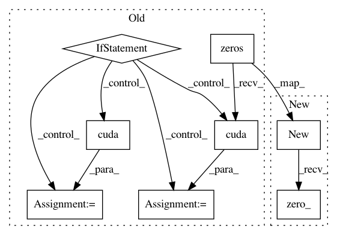

7929d68e8d79bae487858fef93e81d28aa708d40,lib/model/roi_crop/functions/gridgen.py,AffineGridGenFunction,forward,#AffineGridGenFunction#Any#,21
Before Change
def forward(self, input1):
self.input1 = input1
output = torch.zeros(torch.Size([input1.size(0)]) + self.grid.size())
self.batchgrid = torch.zeros(torch.Size([input1.size(0)]) + self.grid.size())
for i in range(input1.size(0)):
self.batchgrid[i] = self.grid
if input1.is_cuda:
self.batchgrid = self.batchgrid.cuda()
output = output.cuda()
for i in range(input1.size(0)):
output = torch.bmm(self.batchgrid.view(-1, self.height*self.width, 3), torch.transpose(input1, 1, 2)).view(-1, self.height, self.width, 2)
return output
After Change
def forward(self, input1):
self.input1 = input1
output = input1.new(torch.Size([input1.size(0)]) + self.grid.size()).zero_()
self.batchgrid = input1.new(torch.Size([input1.size(0)]) + self.grid.size()).zero_()
for i in range(input1.size(0)):
self.batchgrid[i] = self.grid.astype(self.batchgrid[i])
In pattern: SUPERPATTERN
Frequency: 3
Non-data size: 8
Instances
Project Name: jwyang/faster-rcnn.pytorch
Commit Name: 7929d68e8d79bae487858fef93e81d28aa708d40
Time: 2017-12-20
Author: jyang375@t1000.cc.gatech.edu
File Name: lib/model/roi_crop/functions/gridgen.py
Class Name: AffineGridGenFunction
Method Name: forward
Project Name: jwyang/faster-rcnn.pytorch
Commit Name: 7929d68e8d79bae487858fef93e81d28aa708d40
Time: 2017-12-20
Author: jyang375@t1000.cc.gatech.edu
File Name: lib/model/roi_crop/functions/gridgen.py
Class Name: AffineGridGenFunction
Method Name: backward
Project Name: jwyang/faster-rcnn.pytorch
Commit Name: 7929d68e8d79bae487858fef93e81d28aa708d40
Time: 2017-12-20
Author: jyang375@t1000.cc.gatech.edu
File Name: lib/model/roi_crop/functions/roi_crop.py
Class Name: RoICropFunction
Method Name: backward